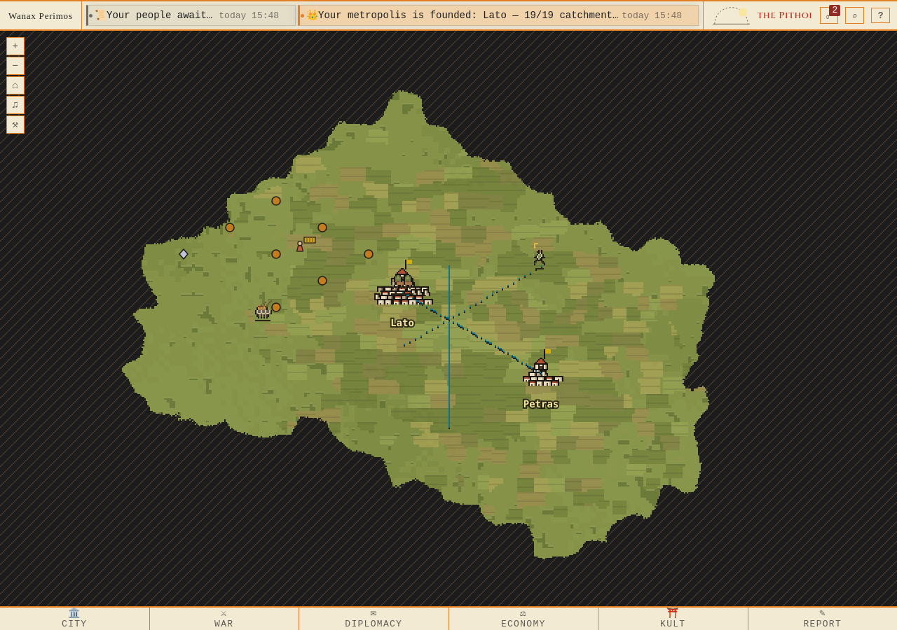
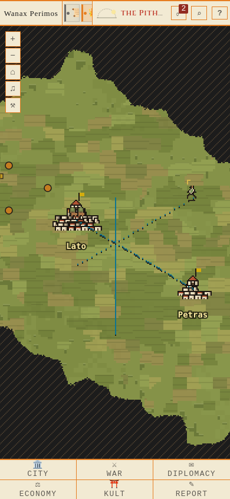
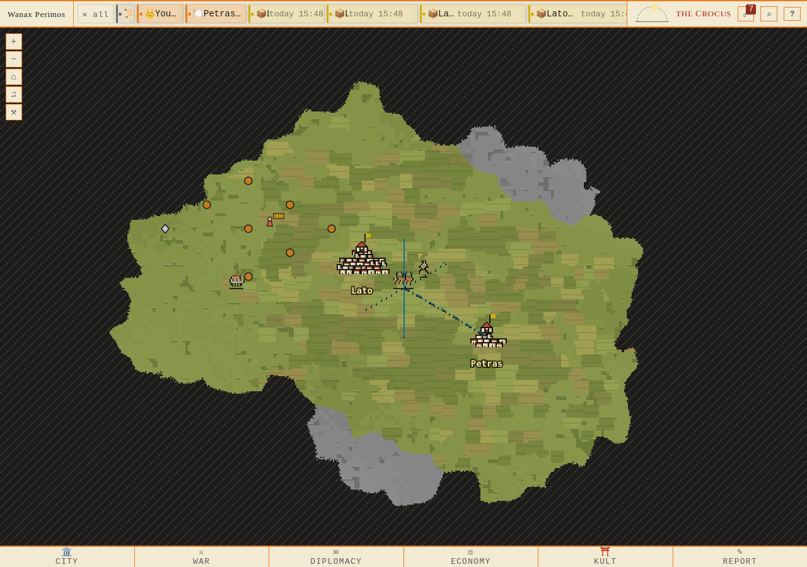
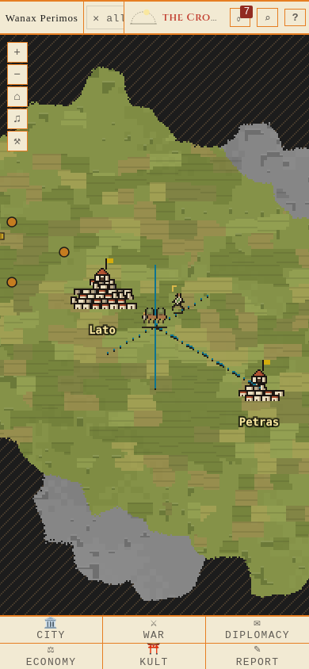
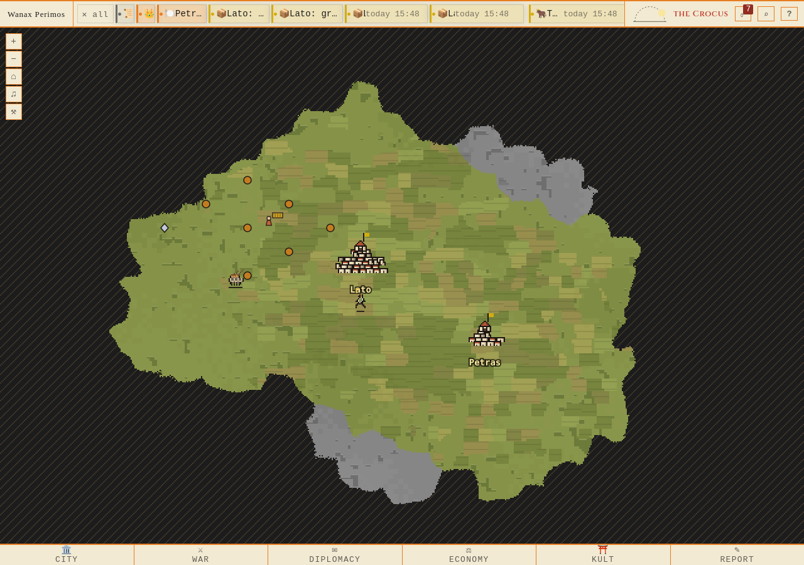
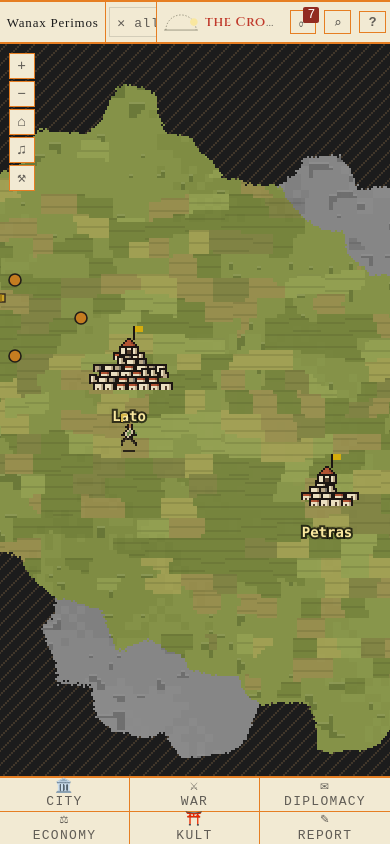

Avgång — starthex, 1280px

Riktiga Firefoxbilder i 1280×900 och 390×844. Ingen bild har ritats om. Rapport · Proveniens


Tre samtidiga rutter vid avgång, mellanläge och sent läge; därefter leverans. Enhet och bud är uttryckliga sparade scenfixturer, karavanen skickas via riktigt API. Befintliga pixelmönster oförändrade. Proveniens





